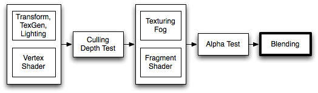

混合（Blending）
混合用于透明或半透明物体

当图形呈现之后，所有着色器已经执行并应用到所有纹理时，像素被绘制到屏幕。他们如何结合由混合命令控制。
语法：
Blend Off: 关闭混合
Blend SrcFactor DstFactor: 启用混合。生成的颜色乘以 SrcFactor。已经在屏幕上的颜色乘以 DstFactor 和两个加在一起。
Blend SrcFactor DstFactor, ScrFactorA DstFactorA: 后面两个参数是Alpha通道的混合因子
BlendOp BlendOp: 非颜色混合操作
混合操作
可以使用以下的混合运算
| 操作符 | 说明 |
|---|---|
| Add | 源和目标叠加 |
| Sub | 从源减去目标 |
| RevSub | 从目标减去源 |
| Min | 使用目标和源中较小的那一个 |
| Max | 使用目标和源中较大的那一个 |
混合因子
所有以下属性都是有效的混合命令在两个 SrcFactor & DstFactor。源是指计算颜色，目的地是已经在屏幕上的颜色。如果 BlendOp 用逻辑操作，则将忽略混合因子。
| 因子 | 说明 |
|---|---|
| One | 让源或目标颜色完全通过。 |
| Zero | 删除源或目标的值。 |
| SrcColor | 这个阶段的值乘以源颜色值。 |
| SrcAlpha | 这个阶段的值乘以源 alpha 值。 |
| DstColor | 这个阶段的值乘以帧缓冲源颜色值。 |
| DstAlpha | 这个阶段的值乘以帧缓冲 alpha 值。 |
| OneMinusSrcColor | 1 - 源颜色值 |
| OneMinusSrcAlpha | 1 - 源 alpha 值 |
| OneMinusDstColor | 1 - 目标颜色值 |
| OneMinusDstAlpha | 1 - 目标 alpha 值 |
细节
下面是最常见的混合类型：
Blend SrcAlpha OneMinusSrcAlpha // Alpha 混合
Blend One Ond // 叠加
Blend OneMinusDstColor One // 软叠加
Blend DstColor Zero // 乘法
Blend DstColor SrcColor // 2 倍乘法
示例
叠加一个纹理到屏幕
Shader "Simple Additive"
{
Properties
{
_MainTex ("MainTex", 2D) = ""{}
}
SubShader
{
Tags { "Queue"="Transparent" }
Pass
{
Blend One One
SetTexture [_MainTex] { combine Texture }
}
}
}
🔚